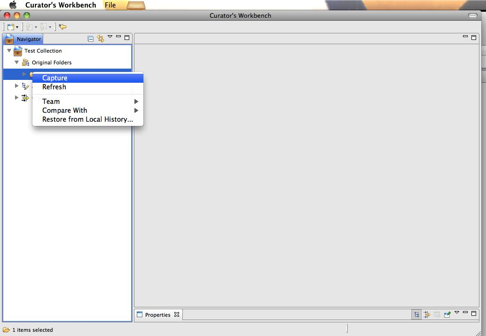

Capturing Files
Capturing files brings files into a staging space (see Figure
3). This is where you will be bringing those linked files into
dedicated space.
To capture files and folders:
- Select one or many files in the Original Folders section.
(SHIFT, CTRL or OPTION can assist you in creating your selection.)
- Right-click on a selected file to bring up the context menu
and choose "Capture".
- The file and all of its un-captured parent folders (up to the
linked original) will be added to the Arrangement section.
NOTE: If a folder was previously captured and subsequently renamed or
moved, the newly captured children will still appear in the
rearranged folder.
During capture, the workbench automatically generates a checksum and
stages the file to your preferred staging location. A progress bar will
appear to show progress since it can take some time to move files from
one server to another.

Figure 3. Capturing linked folders onto staging space.